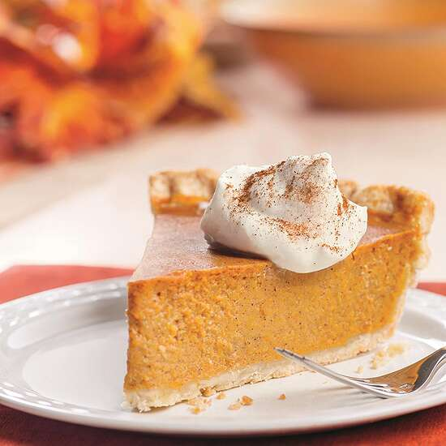

Pumpkin Pie

Description
For those of you who want a pie that tastes like pumpkin that's lightly sweetened, this one is for you.
Ingredients
- 1 frozen unbaked (9-inch) deep dish pie crust
- 1 (15 ounce) can pumpkin
- 1 (14 ounce) can sweetened condensed milk
- 2 eggs
- 1 tablespoon McCormick® Pumpkin Pie Spice
- 1 tablespoon Vanilla Whipped Cream (recipe follows)
Steps
- Preheat oven to 425 degrees F. Place pie crust on large foil-lined baking sheet.
- Mix pumpkin, milk, eggs and pumpkin pie spice in large bowl until smooth. Pour into crust.
- Bake 15 minutes.
- Reduce oven temperature to 350 degrees F. Bake 40 minutes longer or until knife inserted 1 inch from crust comes out clean.
- Cool completely on wire rack. Serve with Vanilla Whipped Cream, if desired.